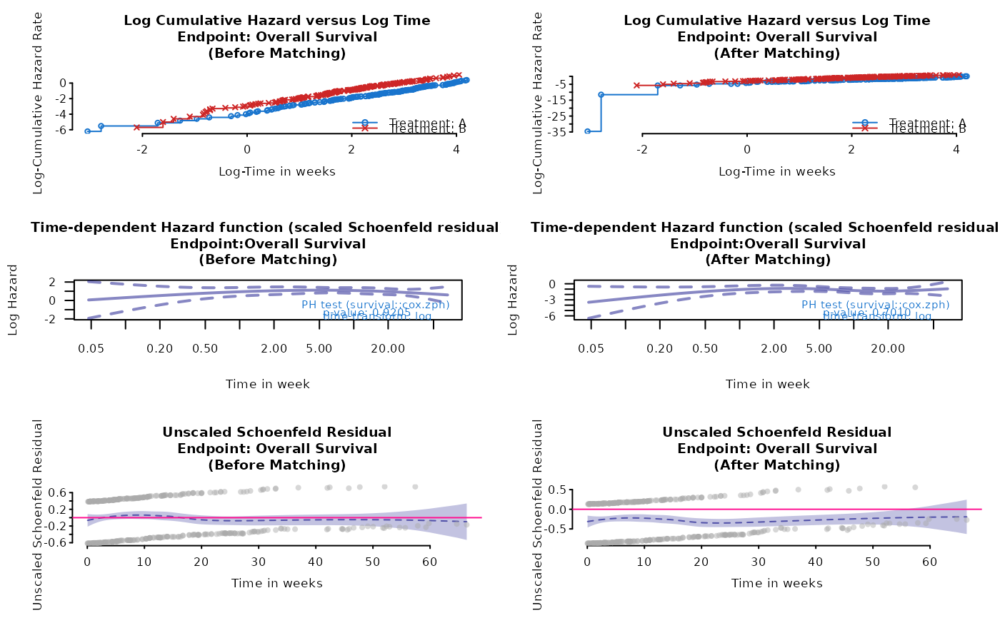
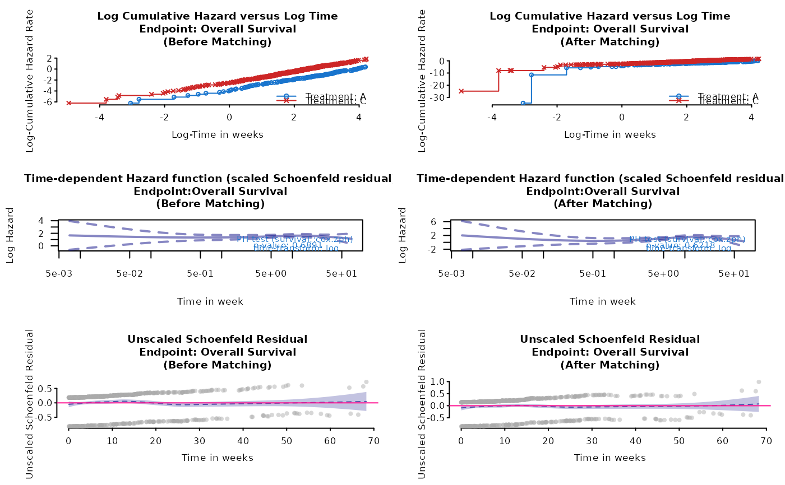

Diagnosis plot of proportional hazard assumption for anchored and unanchored
Source:R/plot_km.R
ph_diagplot.RdDiagnosis plot of proportional hazard assumption for anchored and unanchored
Usage
ph_diagplot(
weights_object,
tte_ipd,
tte_pseudo_ipd,
trt_ipd,
trt_agd,
trt_common = NULL,
trt_var_ipd = "ARM",
trt_var_agd = "ARM",
endpoint_name = "Time to Event Endpoint",
time_scale,
zph_transform = "log",
zph_log_hazard = TRUE
)Arguments
- weights_object
an object returned by
estimate_weight- tte_ipd
a data frame of individual patient data (IPD) of internal trial, contain at least "USUBJID", "EVENT", "TIME" columns and a column indicating treatment assignment
- tte_pseudo_ipd
a data frame of pseudo IPD by digitized KM curves of external trial (for time-to-event endpoint), contain at least "EVENT", "TIME"
- trt_ipd
a string, name of the interested investigation arm in internal trial
tte_ipd(real IPD)- trt_agd
a string, name of the interested investigation arm in external trial
tte_pseudo_ipd(pseudo IPD)- trt_common
a string, name of the common comparator in internal and external trial, by default is NULL, indicating unanchored case
- trt_var_ipd
a string, column name in
tte_ipdthat contains the treatment assignment- trt_var_agd
a string, column name in
tte_pseudo_ipdthat contains the treatment assignment- endpoint_name
a string, name of time to event endpoint, to be show in the last line of title
- time_scale
a string, time unit of median survival time, taking a value of 'years', 'months', 'weeks' or 'days'
- zph_transform
a string, pass to
survival::cox.zph, default is "log"- zph_log_hazard
a logical, if TRUE (default), y axis of the time dependent hazard function is log-hazard, otherwise, hazard.
Value
a 3 by 2 plot, include log-cumulative hazard plot, time dependent hazard function and unscaled Schoenfeld residual plot, before and after matching
Examples
# unanchored example using ph_diagplot
data(weighted_sat)
data(adtte_sat)
data(pseudo_ipd_sat)
ph_diagplot(
weights_object = weighted_sat,
tte_ipd = adtte_sat,
tte_pseudo_ipd = pseudo_ipd_sat,
trt_var_ipd = "ARM",
trt_var_agd = "ARM",
trt_ipd = "A",
trt_agd = "B",
trt_common = NULL,
endpoint_name = "Overall Survival",
time_scale = "week",
zph_transform = "log",
zph_log_hazard = TRUE
)

# anchored example using ph_diagplot
data(weighted_twt)
data(adtte_twt)
data(pseudo_ipd_twt)
ph_diagplot(
weights_object = weighted_twt,
tte_ipd = adtte_twt,
tte_pseudo_ipd = pseudo_ipd_twt,
trt_var_ipd = "ARM",
trt_var_agd = "ARM",
trt_ipd = "A",
trt_agd = "B",
trt_common = "C",
endpoint_name = "Overall Survival",
time_scale = "week",
zph_transform = "log",
zph_log_hazard = TRUE
)
